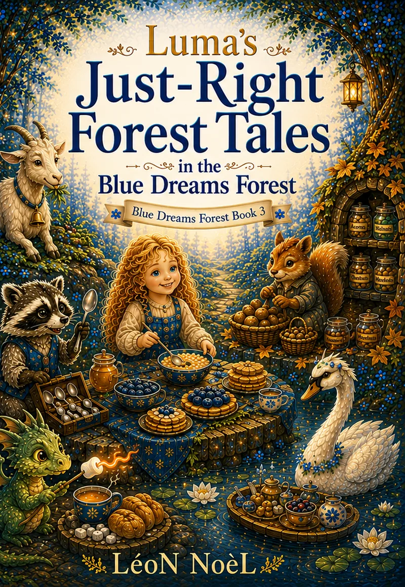

Blue Dreams Forest · Ages 4–8
Luma’s Just-Right Forest Tales
Five Gentle Read-Aloud Stories

Five gentle forest stories about everyday choices.
Join Luma in five Blue Dreams Forest adventures about sharing, honest choices, careful planning, gentle strength, and finding what feels just right.
- Luma and the Raccoon’s Shiny Spoon
- Luma and the Goat on the Hill
- Luma and the Squirrel’s Winter Pantry
- Luma and the Dragon’s Marshmallow Breakfast
- Luma and the Swan’s Floating Breakfast
Created for bedtime reading, peaceful moments, and small conversations between children and grown-ups.
Keep the story going
Free companion resources.
Printables for home, classroom, library, or a quiet follow-up after reading.
Companion resources
More printables and reading activities are available in the free resource library.
Browse free resources →Explore more